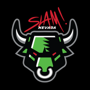

Specialist Rotations
K–5 specialist schedule for 2026–27 — open it below, or save this page to your Home Screen first. No school Google sign-in needed.
Open scheduleTip: Add this page to your Home Screen for the bull icon, then tap Open schedule.